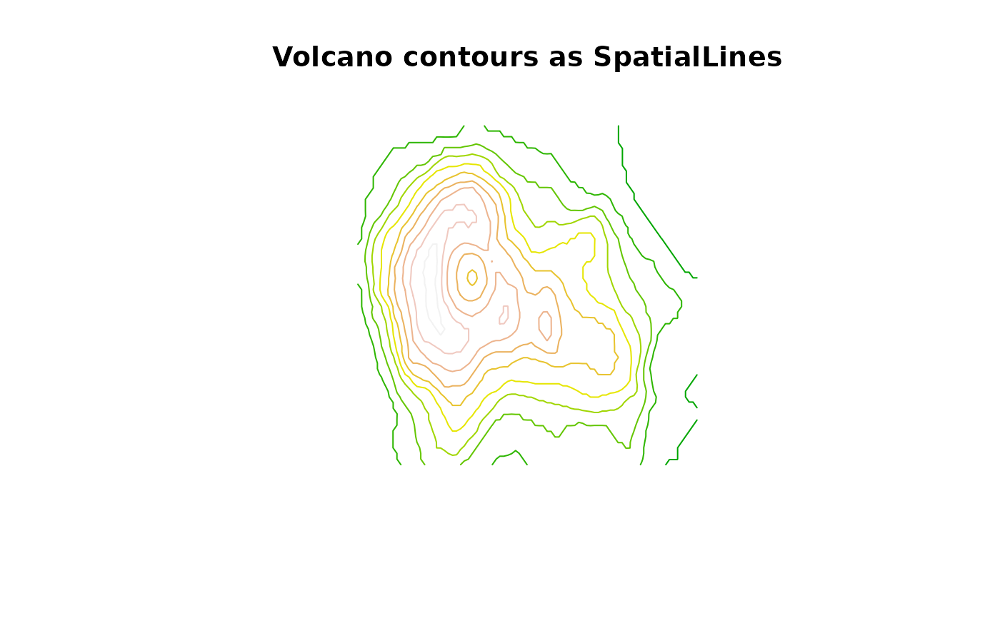

ContourLines2SLDF.RdThese functions show how to build converters to SpatialLinesDataFrame objects:
ArcObj2SLDF from the list returned by the get.arcdata function in the RArcInfo package; ContourLines2SLDF from the list returned by the contourLines function in the graphics package (here the data frame is just the contour levels, with one Lines object made up of at least one Line object per level); and MapGen2SL reads a file in "Mapgen" format into a SpatialLines object.
ArcObj2SLDF(arc, proj4string=CRS(as.character(NA)), IDs) ContourLines2SLDF(cL, proj4string=CRS(as.character(NA))) MapGen2SL(file, proj4string=CRS(as.character(NA)))
| arc | a list returned by the |
|---|---|
| IDs | vector of unique character identifiers; if not given, suitable defaults will be used, and the same values inserted as data slot row names |
| cL | a list returned by the |
| proj4string | Object of class |
| file | filename of a file containing a Mapgen line data set |
A SpatialLinesDataFrame object
Coastlines of varying resolution may be chosen online and downloaded in "Mapgen" text format from https://www.ngdc.noaa.gov/mgg/shorelines/shorelines.html, most conveniently using the interactive selection tool, but please note the 500,000 point limit on downloads, which is easy to exceed.
#data(co37_d90_arc) # retrieved as: # library(RArcInfo) # fl <- "http://www.census.gov/geo/cob/bdy/co/co90e00/co37_d90_e00.zip" # download.file(fl, "co37_d90_e00.zip") # e00 <- zip.file.extract("co37_d90.e00", "co37_d90_e00.zip") # e00toavc(e00, "ncar") # arc <- get.arcdata(".", "ncar") #res <- arcobj2SLDF(arc) #plot(res) #invisible(title("")) res <- ContourLines2SLDF(contourLines(volcano)) plot(res, col=terrain.colors(nrow(as(res, "data.frame"))))title("Volcano contours as SpatialLines")